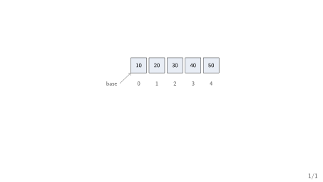
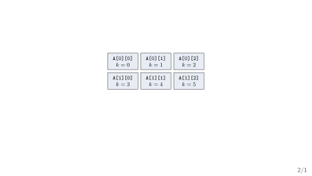
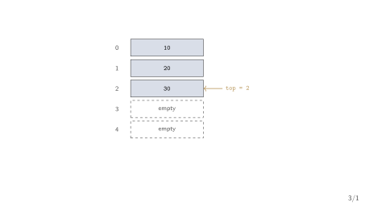
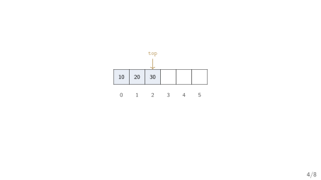
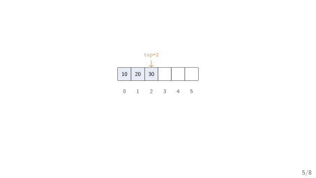
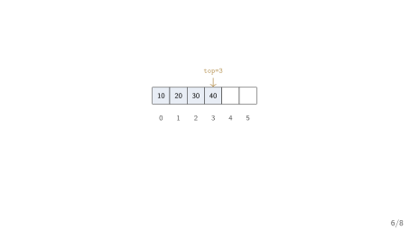
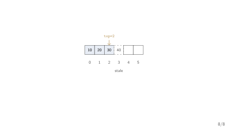

Week 3 — Address Calculation and the Stack ADT over Arrays
GCET Ganderbal
What Week 2 gave us. A way to measure cost — \(T(n)\), the classes \(O\)/\(\Omega\)/\(\Theta\), and the best/worst/average distinction — without running any code.
Our running example. The expression processor reads (a+b)*c. Before it can convert or evaluate anything, it must know the brackets are balanced.
Weeks 1–2 built the vocabulary; from here on, each week is a structure, motivated by a job the previous one could not do.
You have used arrays since your first C course. int A[10]; declares 10 integer-sized slots, indexed A[0] through A[9].
A[i] is fast — \(O(1)\), independent of \(n\).A[i]?An array is not just “several boxes.” It is one formula for turning an index into an address.
Section 1
Arrays and Address Calculation
Definition. An array is a block of \(n\) equal-sized slots stored at contiguous addresses, so any slot’s address can be computed directly from its index (Horowitz and Sahni 2008; Aho et al. 1983).
sizeof the element type, a notion already familiar from Week 1.One-dimensional array address.
\[\text{addr}(A[i]) = \text{base} + i \times w\]
where base is the address of A[0] and \(w\) is the size (in bytes) of one element.
base slot \(i\) sits.This is why array access is \(O(1)\): the address formula does not grow with \(n\).
A[4]Setup. int A[6]; with base = 1000 and \(w = 4\) bytes (a C int).
base itself.A[6] would compute to address \(1024\) — a real address, but one that belongs to whatever memory happens to follow the array. Nothing stops the formula from computing it; only the programmer’s discipline does.

A table needs two indices. A \(3 \times 4\) grid — int A[3][4]; — has a row \(i\) and a column \(j\), but memory itself has only one dimension: a single line of addresses.
Definition. Row-major order stores an array row by row: all of row \(0\), then all of row \(1\), and so on (Horowitz and Sahni 2008; Aho et al. 1983).
For an \(r \times c\) array of \(w\)-byte elements:
\[\text{addr}(A[i][j]) = \text{base} + ((i \times c) + j) \times w\]
\(i \times c\): skip over \(i\) complete rows, each of length \(c\).
\(+\,j\): then step \(j\) more slots into row \(i\).
This is the layout C itself uses for a declared 2D array — the reason A[i][j] and *(A + i*c + j) mean the same thing.
Definition. Column-major order stores an array column by column: all of column \(0\), then all of column \(1\), and so on.
For the same \(r \times c\) array of \(w\)-byte elements:
\[\text{addr}(A[i][j]) = \text{base} + ((j \times r) + i) \times w\]
\(j \times r\): skip over \(j\) complete columns, each of length \(r\).
\(+\,i\): then step \(i\) more slots down column \(j\).
C and most C-family languages never use this order for a plain 2D array — but Fortran does, and it is the reason the two languages disagree about which loop order is cache-friendly.
Row-major linear index

Column-major linear index

Same physical array, same highlighted cell \(A[2][1]\) — a different linear index depending on which order we chose.
Setup. int A[3][4]; (\(r = 3\), \(c = 4\)) with base = 1000 and \(w = 4\) bytes. Find \(\text{addr}(A[2][1])\) under each order.
The same cell lands at two different addresses — the major order is part of the array’s contract, not an implementation detail you can ignore.
Which formula would you use? A C program declares int A[5][2]; and asks for \(\text{addr}(A[3][1])\).
Turn and talk. Compute both indices. Are they ever equal for a non-square array? What about \(A[i][j]\) on the diagonal of a square array?
The array gives us \(O(1)\) access anywhere. Now restrict that access on purpose.
Section 2
The Stack ADT
An everyday LIFO. You can only take the top plate off a stack of plates, and you can only add a new plate to the top.
Definition. A stack is a collection with LIFO access: elements are inserted and removed only at one end, called the top (Sedgewick and Wayne 2011; Karumanchi 2017).
push(x): add \(x\) to the top.pop(): remove and return the top element.peek(): return the top element without removing it.isEmpty() / isFull(): query the stack’s state.Sedgewick frames stack, queue, and bag as three collection ADTs that differ only in which element comes out next (p.120).
Two different questions. What does a stack do? (the ADT contract.) How is it built? (the implementation.)
top IndexOne array, one index. Keep the stack’s elements in A[0..capacity-1] and track the index of the most recently pushed element in top.
push, \(\texttt{top} = 0\).top Index
top = 2 — the array holds the elements, top is the only thing that changes on push/pop.Before: push(40)

After: push(40)

push(x)
top = top + 1; A[top] = x;Before: pop()
After: pop() returns 40

pop()
x = A[top]; top = top - 1; return x;The two failure modes. Every array implementation of a stack has a finite capacity — both ends of top’s range must be checked.
push when \(\texttt{top} = \texttt{capacity} - 1\) — there is no slot left.pop or peek when \(\texttt{top} = -1\) — there is nothing to remove.push/pop checks its boundary first — an unchecked push silently corrupts whatever memory follows the array (Week 1’s array-bounds hazard, recurring here).Applying Week 2’s vocabulary. Both push and pop do a fixed amount of work: one boundary check, one index update, one array access.
push is \(O(1)\) worst case.pop is \(O(1)\) worst case.Name the operation, give the bound, state the case — Week 2’s habit applies to every structure from here on.
Trace it yourself. Start from an empty stack (top = -1). Perform, in order: push(5), push(8), pop(), push(3), peek().
peek() return at the end?top after all five operations?top correct but change the returned value of peek()?A stack is only useful once we ask it to solve a real problem.
Section 3
Applications
The calculator’s first job. Before converting or evaluating (a+b)*c, confirm every open bracket has a matching close bracket, in the right order (Horowitz and Sahni 2008; Aho et al. 1983).
((a+b): unbalanced — one open bracket never closes.(a+b)): unbalanced — a close bracket with no partner.(a+(b*c)): balanced — and note the last opened bracket is the first to close. LIFO, again.Scan once, push opens, pop on closes
for each character c in the expression:
if c is an opening bracket: push(c)
if c is a closing bracket:
if stack isEmpty: return false // nothing to match
top = pop()
if top does not match c: return false // e.g. "(]"
return stack isEmpty // every open bracket was matched| char read | action | stack (top on right) |
|---|---|---|
( |
push | ( |
a |
— | ( |
+ |
— | ( |
b |
— | ( |
) |
pop, matches | (empty) |
* |
— | (empty) |
c |
— | (empty) |
(a+b)*c. Stack is empty at the end \(\Rightarrow\) balanced.Two ways the check can fail. Trace (a+b)) and a+b)*(c.
(a+b)): after the first ) pops and matches, the stack is empty; the second ) finds an empty stack \(\Rightarrow\) return false immediately.a+b)*(c: the ) arrives with the stack empty (nothing was ever pushed) \(\Rightarrow\) return false immediately.Why postfix? Postfix (operator after its operands, e.g. a b +) needs no parentheses and no precedence rules to evaluate (Horowitz and Sahni 2008; Aho et al. 1983).
(a+b)*c becomes the postfix string a b + c *.Operands push; operators pop two, push the result
for each token t in the postfix string:
if t is an operand: push(t)
if t is an operator:
right = pop()
left = pop()
push(left OP right) // OP is the operator t
return pop() // the final, only, value left on the stack| token | action | stack (top on right) |
|---|---|---|
| \(2\) | push | \(2\) |
| \(3\) | push | \(2,3\) |
| \(+\) | pop \(3\), pop \(2\), push \(2{+}3\) | \(5\) |
| \(4\) | push | \(5,4\) |
| \(*\) | pop \(4\), pop \(5\), push \(5{\times}4\) | \(20\) |
2 3 + 4 * — our calculator’s shape, with \(a=2\), \(b=3\), \(c=4\): \((a+b) \times c\).One pass, constant work per token. Both algorithms read every character or token exactly once, and each push/pop is \(O(1)\).
Two structures down. Time to consolidate before Week 4 converts infix to postfix.
push past capacity or pop on top = -1 is undefined behaviour, not a graceful failure.pop as “erasing” memory — pop only moves top; the old value is logically gone but physically still sitting there until overwritten.push/pop/peek, LIFO, top = -1 when empty — implemented here over an array.Next week. Expression evaluation and recursion — converting infix to postfix and prefix, and the runtime stack behind every recursive call.
One structure, two implementations. Week 7 will implement this same stack ADT over a linked list instead of an array.
push/pop/peek) change at all between the two implementations?If your answer to (3) is “yes,” revisit “Naming the ADT, Naming the Implementation” from today.
CS301